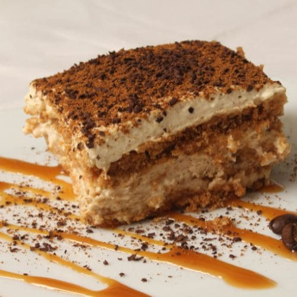

El sabor de Italia: recetas tradicionales
Pasta alla Carbonara
Ingredientes para 4 personas:
- 400 g de pasta (spaghetti o rigatoni).
- 200 g de guanciale (o panceta).
- 3 huevos enteros y 1 yema.
- 50 g de queso parmesano.
- 20 g de queso pecorino.
- Pimienta negra molida y sal.
Preparación:
- Hervir la pasta: Sumerge los espaguetis en abundante agua hirviendo con sal, siguiendo las instrucciones del empaque. ¡No te excedas ni un segundo! La pasta debe quedar "al dente".
- Dorar la carne: Mientras tanto, corta la panceta o el guanciale en pequeños cubos y dóralos en una sartén con un chorrito de aceite de oliva a fuego medio. Cocina hasta que estén crujientes y dorados.
- Reservar la carne: Retira la panceta o el guanciale de la sartén y déjalos a un lado, reservando un poco de la grasa en la sartén.
- Preparar la mezcla: En un recipiente, bate las yemas de huevo con el queso rallado (preferiblemente Pecorino Romano) y la pimienta negra recién molida. La mezcla debe quedar cremosa y homogénea.
- Combinar la pasta y la carne: Cuando los espaguetis estén listos, escúrrelos (reservando un poco del agua de cocción) y agrégales la panceta o el guanciale a la sartén con la grasa reservada.
- Incorporar la salsa: Vierte la mezcla de huevos, queso y pimienta sobre la pasta caliente, removiendo rápidamente para que se forme una salsa cremosa. Es importante hacerlo fuera del fuego para evitar que los huevos se cocinen demasiado.
- Ajustar la salsa: Si la salsa está muy densa, añade un poco del agua de cocción de los espaguetis, de a poco, hasta alcanzar la consistencia deseada.
- Servir: Sirve inmediatamente y disfruta de cada bocado de esta deliciosa y auténtica pasta alla carbonara.
Pizza Margherita
Ingredientes:
- Masa de pizza
- Salsa de tomate
- Mozzarella fresca
- Hojas de albahaca
- Aceite de oliva
Preparación:
- Extender la masa de pizza.
- Cubrir con salsa de tomate.
- Añadir mozzarella y hojas de albahaca.
- Hornear hasta que la masa esté dorada y el queso fundido.
- Rociar con aceite de oliva antes de servir.
Risotto a la milanesa
Ingredientes:
- 350g de arroz Arborio
- 1 cebolla pequeña, picada finamente
- 100g de mantequilla
- 100ml de vino blanco seco
- 1 litro de caldo de carne caliente
- 0.1g de azafrán en hebras
- 50g de queso Parmigiano Reggiano rallado
- Sal y pimienta al gusto
Instrucciones:
- En una cacerola grande, derrite la mitad de la mantequilla y sofríe la cebolla hasta que esté transparente.
- Añade el arroz y tuéstalo durante 1-2 minutos, revolviendo constantemente.
- Vierte el vino blanco y deja que se evapore.
- Disuelve el azafrán en un poco de caldo caliente y añádelo al arroz.
- Comienza a añadir el caldo caliente, un cucharón a la vez, revolviendo constantemente y esperando a que el arroz absorba el líquido antes de añadir el siguiente cucharón.
- Continúa este proceso durante unos 18-20 minutos, o hasta que el arroz esté "al dente".
- Retira la cacerola del fuego y añade la mantequilla restante y el queso Parmigiano Reggiano rallado.
- Mezcla vigorosamente para crear una textura cremosa.
- Sazona con sal y pimienta al gusto.
- Sirve inmediatamente y disfruta.

Tiramisú
Ingredientes:
Para la crema de mascarpone:
- 500g de queso mascarpone
- 6 huevos (separadas las yemas de las claras)
- 150g de azúcar
- Una pizca de sal
Otros ingredientes:
- 300ml de café espresso fuerte, frío
- 200g de bizcochos de soletilla (savoiardi)
- Cacao en polvo sin azúcar para espolvorear
- Licor Amaretto o Marsala (opcional)
Instrucciones:
Preparación de la crema:
- Separa las yemas de las claras de los huevos.
- En un tazón, bate las yemas con el azúcar hasta obtener una crema pálida y esponjosa.
- Agrega el queso mascarpone a la mezcla de yemas y bate hasta que esté bien integrado.
- En otro tazón, bate las claras de huevo con una pizca de sal hasta que estén a punto de nieve.
- Incorpora suavemente las claras batidas a la mezcla de mascarpone, con movimientos envolventes.
Montaje del tiramisú:
- En un recipiente aparte, mezcla el café espresso frío con el licor (si lo usas).
- Sumerge rápidamente los bizcochos de soletilla en la mezcla de café, uno por uno.
- Coloca una capa de bizcochos empapados en el fondo de un recipiente rectangular o copas individuales.
- Cubre los bizcochos con una capa de crema de mascarpone.
- Repite las capas de bizcochos y crema, terminando con una capa de crema.
- Espolvorea generosamente cacao en polvo sobre la última capa de crema.
- Refrigera el tiramisú durante al menos 4 horas, o preferiblemente toda la noche.
- Sirve el tiramisú frío.